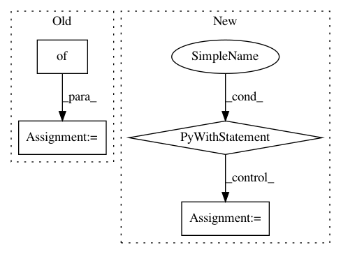

126664f626f28f20e9f460c1cf5f6bf4643ce096,testing/test_data_object.py,TestDataHolderSimple,test_same_shape,#TestDataHolderSimple#,31
Before Change
new_Y = self.rng.randn(2, 2)
self.m.Y = new_Y
fd = {}
self.m.update_feed_dict(self.m.get_feed_dict_keys(), fd)
assert np.all(fd[self.m.Y._tf_array] == new_Y)
self.assertFalse(self.m._needs_recompile)
After Change
self.assertEqual(m.Z.read_value().dtype, settings.np_float)
def test_same_shape(self):
with self.test_context():
m, rng = self.setup()
m.compile()
new_X = rng.randn(2, 2)
m.X = new_X
assert_array_equal(m.X.shape, new_X.shape)
assert_array_equal(m.X.read_value(), new_X)
new_Y = rng.randn(2, 2)
m.Y = new_Y
assert_array_equal(m.Y.shape, new_Y.shape)
assert_array_equal(m.Y.read_value(), new_Y)
new_Z = rng.randn(2, 2)
m.Z = new_Z
assert_array_equal(m.Z.shape, new_Z.shape)
assert_array_equal(m.Z.read_value(), new_Z)
def test_raise(self):
with self.test_context():
m, rng = self.setup()
m.compile()
In pattern: SUPERPATTERN
Frequency: 5
Non-data size: 4
Instances
Project Name: GPflow/GPflow
Commit Name: 126664f626f28f20e9f460c1cf5f6bf4643ce096
Time: 2017-10-30
Author: art.art.v@gmail.com
File Name: testing/test_data_object.py
Class Name: TestDataHolderSimple
Method Name: test_same_shape
Project Name: tensorlayer/tensorlayer
Commit Name: 641a28fbf0daff0ad1ad0f43d2c4b545cb6f9656
Time: 2019-02-16
Author: dhsig552@163.com
File Name: examples/reinforcement_learning/tutorial_cartpole_ac.py
Class Name: Actor
Method Name: learn
Project Name: GPflow/GPflow
Commit Name: 126664f626f28f20e9f460c1cf5f6bf4643ce096
Time: 2017-10-30
Author: art.art.v@gmail.com
File Name: testing/test_data_object.py
Class Name: TestDataHolderIntegers
Method Name: test_same_shape
Project Name: tensorlayer/tensorlayer
Commit Name: 641a28fbf0daff0ad1ad0f43d2c4b545cb6f9656
Time: 2019-02-16
Author: dhsig552@163.com
File Name: examples/reinforcement_learning/tutorial_cartpole_ac.py
Class Name: Critic
Method Name: learn
Project Name: OpenNMT/OpenNMT-py
Commit Name: aaa220b753c9749ac1a0d86a32e4c1fdcb4faa7a
Time: 2019-06-13
Author: francois.hernandez.fh@gmail.com
File Name: onmt/utils/optimizers.py
Class Name: Optimizer
Method Name: backward